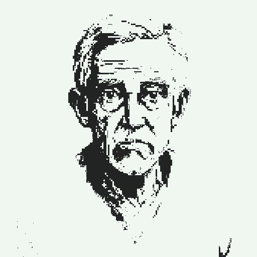
레마르크 REMARQUE
도청·감청으로 이름을 날리던 지휘관. 퇴역 후 건강이 악화되어 병상에 누운 채, 손자에게 자신의 전쟁을 회상한다. 이 이야기의 화자.
INDEPENDENT GAME STUDIO — SOLO DEVELOPED
적의 모스 신호를 도청해 아군을 지휘하라.
1950년대 가상 전쟁, 1-bit 턴제 도청 시뮬레이션.
1950년대 가상의 전쟁을 배경으로, 적의 모스 신호를 도청해 아군을 지휘하는 1-bit 턴제 도청 시뮬레이션입니다. 단순한 전투가 아닌, 어둠 속 정보전의 긴장감을 직접 해독해 내는 경험.
WISHLIST & FOLLOW →노병 레마르크는 병상에 누워 있다. 손자 엔더슨이 가져온 군인 시절의 빛바랜 사진 한 장. 그 사진은 도청과 감청으로 이름을 날리던 지휘관 시절의 기억을 깨운다. 손자에게 전쟁 이야기를 들려주는 회상 속에서, 모든 것은 그가 전방 제5보병사단에 처음 배치되던 그날부터 다시 시작된다.
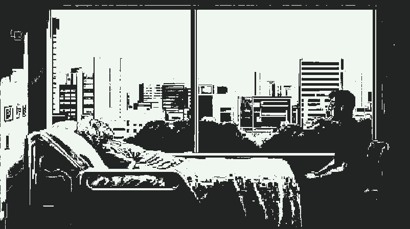

도청·감청으로 이름을 날리던 지휘관. 퇴역 후 건강이 악화되어 병상에 누운 채, 손자에게 자신의 전쟁을 회상한다. 이 이야기의 화자.
레마르크의 손자. 할아버지의 군대 이야기에 흥미를 가지고 귀 기울이는 청자. 회상의 문을 여는 사람.
109 보병사단 준위. 실전이 처음인 레마르크 소령이 전장에 적응할 수 있도록 곁에서 도운 인물.
도청이 시작되면 해독기가 적군의 모스 부호를 한 글자씩 문자로 변환한다. 플레이어는 Tap으로 변환된 내용을 직접 받아 적는다.
수집한 도청 내용을 해석한다. 이를 통해 적군의 다음 행동, 교신 시간, 그리고 주파수를 읽어낸다.
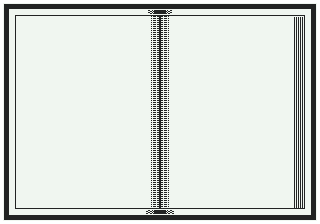
해석한 정보를 바탕으로 모스 부호표를 보며 명령을 송신한다. 아군 유닛을 이동시키거나 공격 명령을 내린다.
다음 도청을 위해 주파수와 시간을 라디오와 시계에 입력한다. 잘못 맞추면 도청은 실패하고, 놓친 정보는 첩보란에서만 일부 확인할 수 있다.
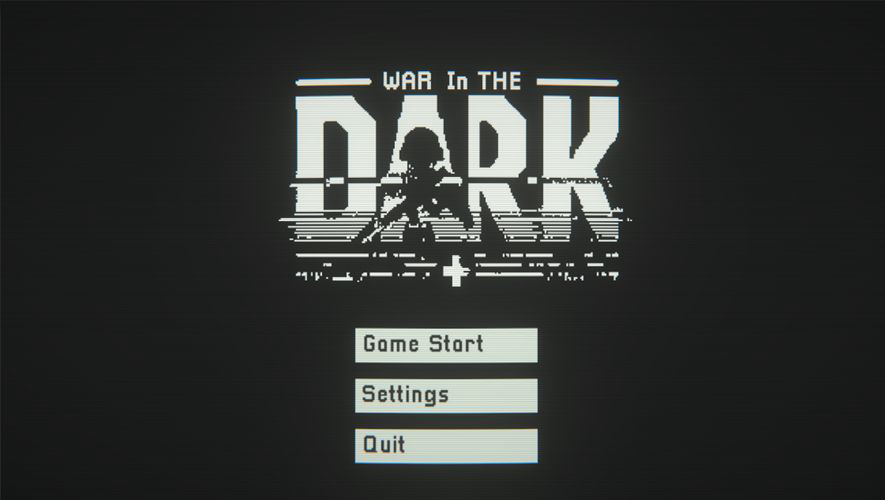
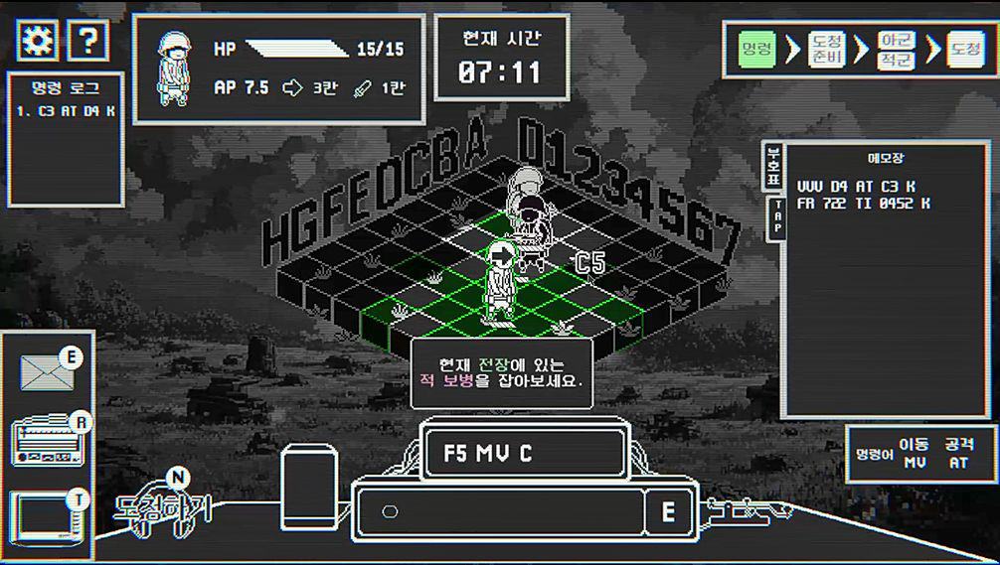
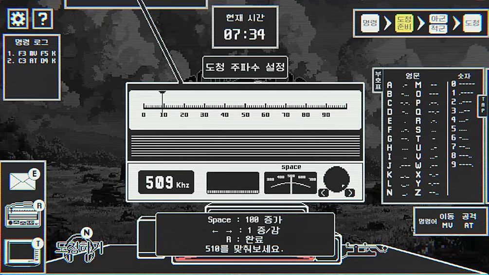
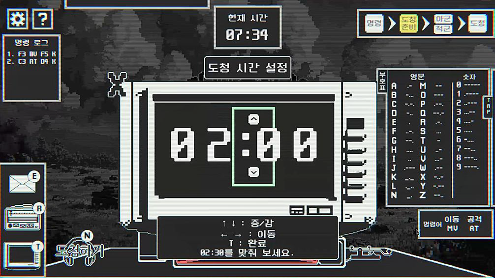
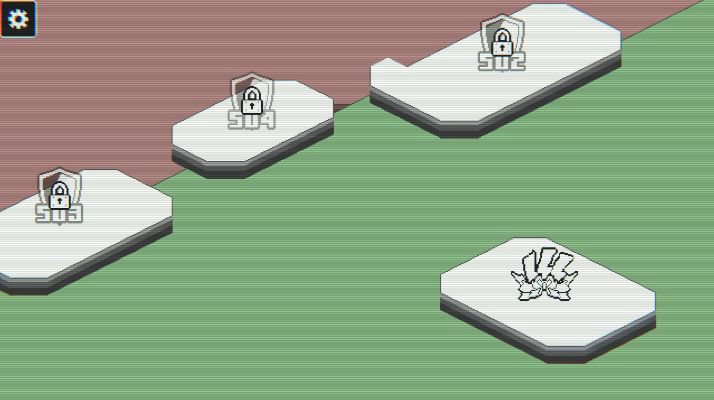
03 — KEY FEATURES
단순한 전투 중심의 플레이에서 벗어나 정보전의 중요성을 강조합니다. 신호를 빠르고 정확하게 해석해 적의 의도를 파악하고, 지상 부대를 효율적으로 통제해야 합니다.
아군 명령과 적군 감청이 단순 텍스트가 아닌 모스 부호라는 암호화된 형태로 진행됩니다. 낯선 정보 형식을 직접 해독해 내는 강렬한 쾌감을 제공합니다.
단 두 색(#222323 · #F0F6F0)의 픽셀 아트로 단순하지만 강렬한 대비를 구현했습니다. 흑백의 전장이 전쟁 특유의 긴박함과 냉정함을 전달합니다.
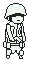
넓은 범위를 탐색하며 적의 위치를 파악하는 데 유리.
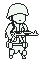
높은 체력으로 적과의 장기 전투에 유리.
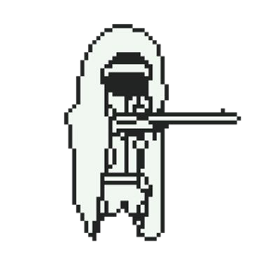
상하좌우 원거리 사격에 특화. 체력은 낮다.
안정화 및 피드백 수렴 — 패치를 통한 버그 수정과 밸런스 조절.
신규 스테이지 제작 — 스테이지 3·4·5의 스토리와 메커니즘 구현.
병력 시스템 확장 — 특전·의무 등 특수 병과의 특성·스탯·외형 개발.
추가 콘텐츠 개발 — 연습 모드, 무한 모드 등 다양한 모드와 난이도.
The final mission begins. 완성본 스팀 출시와 글로벌 시장 진출.
THE STUDIO
새싹 스튜디오는 식물과 게임을 사랑하는 1인 개발자 김시준의 작업실입니다. 한 알의 씨앗이 어둠 속에서 싹을 틔우듯, 작은 아이디어를 깊은 세계로 길러내는 일에 몰두합니다.
2002년생. 중앙대학교 식물생명공학과와 게임·인터랙티브 미디어학과를 복수전공하고 소프트웨어학을 부전공으로 이수 중입니다. 게임 클라이언트와 서버 개발 경험을 두루 갖추었으며, 새로운 플랫폼과 언어를 배우는 데 두려움이 없습니다.